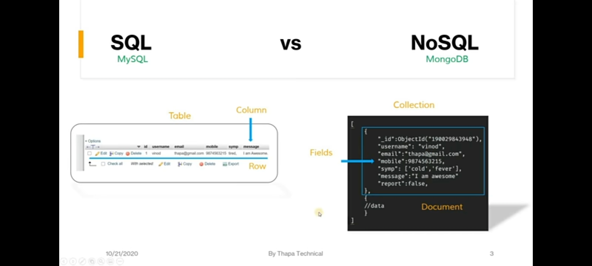

Search on googlr ::: json vs bson , sql vs nosql
sql vs nosql
(mysql) (mongodb)
1. rdbms 1. no relational document oriented database mnagement system,
and works on document-based databse.
2.stores data in form of entities and tables 2. Mongodb stores data in formof documents.
3. it uses sql to query database 3. mongodb uses BSON yo query database.
//1. json is a text-based format , and tetx parsing is very slow.
//2. jsons radablee format far from space efficient another database concern
//3. json only supports a limited number of basic data types.
in order to make mongodb json-first but still high performance and general purpose. bson was invented to bridge
the gap: a binary representaion to store data in json format optimized for speed, space and flexibility. its not dissimilar from other interchange formats like
protocol buffers or thift in terms of approach.
json VS bson
1.consumes less space 1. more space is consumed
2.transmittion of data 2. storage of data
3.encoding and decoding >> no technique 3. faster encoding and decoding techniques
4.key value pair only used for transfter of data 4. lightweight, fast
